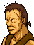

Narration To Munster, after Nanna and Mareeta
レイドリックに連れ去られた
ナンナたちを助け出すため
リーフはマンスターへと向かう
その途上、『イスの海岸』とよばれる
海岸地帯に小さな集落があった・・・
Opening 1 August's scheme

バクス、おまえは殺しすぎる
略奪するのはやむをえぬが
無用な殺生はするな

うるせえなぁ
軍師だかなんだか知らねえが
ここはオレがまかされているんだ
よけいな口出しはするんじゃねぇ
あの
いまいましいフィアナの戦士団も
今なら手出しはできねぇんだぜ
なんせ、レンスターの王子を
かくまっていると密告したのは
オレたちのボスなんだからな
リーフ王子だと！？
それは本当なのか？
ああ
村人を一人捕まえて口をわらせた
そいつは死んじまったがよ
拷問か・・・
そうだ
かしらは拷問のやり方も
あんたから教えられたといってたぜ
さすがは
司祭を破門されるだけのことはある
と笑ってたがな
リフィスのこぞうめ
図に乗りおって・・・
まあいい・・・
王子さえ見つかれば
もうヤツに用はない
さて・・・これからどうするかだが・・・
まずはあの方に
報告せねばならぬな・・・
Opening 2
If Eyvel is present

エーヴェル！
村がおそわれている！

リフィス団ね
やつら
しばらくおとなしくしていたのに・・・
ほうっておけない
村をたすけよう！
If Eyvel is absent and Finn is present
フィン！
村がおそわれている！

リフィス団ですね
しばらく
おとなしくしていたのですが・・・
ほうっておけない
村をたすけよう！
If neither Eyvel nor Finn is present
おや、あれは・・・
村がおそわれている！
さては、リフィス団か
ほうっておけないな
村をたすけよう！
House bottom
If no houses have been destroyed
.png)
旅のシスターが
海賊たちに連れてゆかれました
どうかたすけてあげてくださいまし
それから、これを・・・
きずぐすりです
どうぞお使いください
If any house has been destroyed
船は壊されました
海賊島にはゆけません・・・
House top
If no houses have been destroyed

ロナン、待ちなさい、ロナン

母さん、止めないで
もう決めたことなんだ
ああ
あなたは
フィアナ義勇軍の方ですね
お願いです
ぼくもいっしょに戦わせてください
弓には自信があります
けっして
足手まといにはなりませんから・・・
でも
おまえ
戦ったことなんて一度も・・・
そんなことは関係ないよ！
このままじゃ
ずっと、あいつらにおびえて
暮らさなきゃならないじゃないか
ぼくは
もうガマンできないんだ！
If any house has been destroyed
.png)
船は壊されたぞ
海賊島にはゆけぬなぁ・・・
House right
If no houses have been destroyed
.png)
あんたら
よけいなことをしてくれたな
このままでは
海賊の仕返しで
村人は皆殺しにされてしまう
いったいどうしてくれるんだ！！
.png)
おにいちゃん！
そんな言い方ってないでしょう！
この人たちは
わたしたちのために
戦ってくれてるのよ！
うるせえ！
だからってオレたちが殺されちゃ
元も子もねえだろ！
けっ
よけいなおせっかいはやめて
とっとと帰れってんだ！
・・・ごめんなさい
兄も昔はあんなじゃなかったんですけど
いっしょうけんめいがんばっても
なにもむくわれないじゃないかって
すっかりひねくれてしまって・・・
おわびといってはなんですが
この魔法のうでわを
さしあげます
わたしは
義勇軍のみなさんを応援してます
がんばってくださいね
If any house has been destroyed
船は壊された
海賊島にはいけねぇぜ・・・
On seizing
If no houses have been destroyed
リーフ様ですな
・・・あなたは？
アウグストと申します
旅のブラギ僧にございます
ぼくになにか？
村人らのため
海賊どもの島に向かうご決意と
お聞きしましたが・・・
ええ
このままでは海賊たちの
仕返しを受けるでしょうし
それに島には
シスターが
捕えられていると聞きました
では、海賊島まで
私がご案内いたしましょう
えっ
司祭が、ですか？
おどろきあるな
このアウグストに不可能はなし
万事、おまかせを
If any house has been destroyed
リーフ様ですな
・・・あなたは？
アウグストと申します
旅のブラギ僧にございます
ぼくになにか？
マンスターに行きたいのですが
海賊たちが横行していて
難儀しています
よろしければ
同行させていただけぬでしょうか？
ケルベス砦の近くまでなら
かまいませんが
それはかたじけない
旅の道すがら
いろいろとお教えしましょう
このアウグスト
あなた様のお役に立ちたいと存じます
Bucks: battle quote
てめえら
このバクス様を
なめるんじゃねぇぜ！！
Bucks: defeat quote
うぐぐ・・・
てめえら
おぼえてろ・・・
Bucks: release quote
すまねえ
もう悪いことはやめて
漁師になるぜ、あばよ